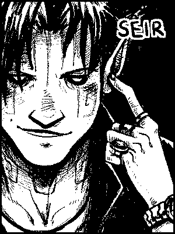
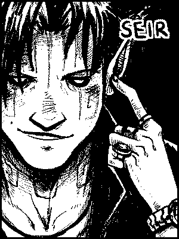

Circa follows Montore's booming gang culture, during a time when tensions between humans and hegatas, descendants of beings whose existence predates that of humans, are high. Sy Cross thrives in climates like this, but things change when the fight hits a little too close to home.
 

This website has been designed to reduce the energy use associated with accessing online entertainment. To do this, it was made into a static website (requires less processing power), and uses an image compression technique called “dithering” to reduce file size. It's drawn by hand, scanned and edited digitally using open-source software (GIMP and Krita) on Linux.
Read more about low-tech websites.